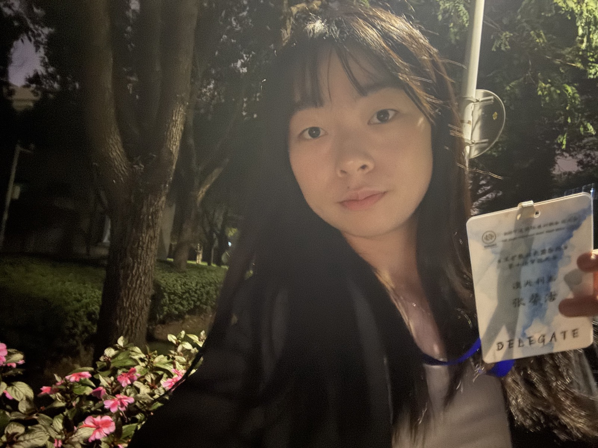

01 / 首屏Intro
我把想法变成
可以被体验、被理解，
也能继续迭代的作品。
I turn ideas into work
people can experience, understand,
and keep improving.
张馨洁 · AI 应用实践者 × 创作者Xinjie Zhang · AI Practitioner × Creator
宁波诺丁汉大学计算机科学（人工智能方向）本科生。我关注 AI 如何真正参与创作和解决问题，也持续探索游戏、视频、视觉设计、播客与写作。 Computer Science with Artificial Intelligence undergraduate at the University of Nottingham Ningbo China. I explore how AI can support real creative work and problem-solving across games, video, visual design, podcasts, and writing.

02 / About
创作者，是我最认可的身份。 The identity I value most is being a creator.
我喜欢从一个模糊念头出发，理解问题、搭出结构，再通过 AI、代码和内容工具，把它做成真实作品。比起只完成一项任务，我更享受这个过程。 I enjoy starting with an unfinished idea, understanding the problem, shaping a structure, and using AI, code, and creative tools to turn it into something real. Rather than simply completing a task, I value that process.
我的专业方向是计算机科学与人工智能。现阶段，我仍在积累技术能力和实践经验，也逐渐形成了自己的工作方式：让 AI 承担资料整理、草案生成和重复执行，我负责目标、事实、审美与最终判断。 I study Computer Science with Artificial Intelligence. I am still building technical depth and practical experience, while developing a clear way of working: AI supports research, drafting, and repetitive execution; I remain responsible for the goal, facts, creative direction, and final decisions.
03 / Selected Work
四个正在生长的实践。 Four practices, still growing.
家具智能导购 ChatbotFurniture Shopping Assistant Chatbot
真实产品信息 · 场景设计 · 幻觉测试Real product data · scenario design · hallucination testing
查看项目 →View project → 02 / AI Game《镜中人测试》Mirror Test
30 小时 Game Jam · 持续优化中30-hour game jam · ongoing improvements
查看项目 →View project → 03 / AI Practice北辰青年四周 AI 实践Four-Week AI Practice with Polaris Youth
洞察 · 招募物料 · 个人操作系统Insight · recruitment materials · a personal operating system
查看项目 →View project → 04 / Workflow求职面试 AI Skill / 工作流AI Skill & Workflow for Job Applications
证据整理 · 岗位匹配 · 事实核验Evidence · role matching · fact-checking
查看项目 →View project →点击任一项目，查看为什么做、我做了什么、AI 帮了什么，以及我负责的判断。 Open any project to see why I made it, what I did, how AI helped, and what I decided.
04 / Creative Archive
更多创作，不止一种媒介。 More creative work, across more than one medium.
对原创写作感兴趣？欢迎通过邮箱联系我。 Interested in the fiction writing? Feel free to reach me by email.
05 / Contact
如果你也在把想法变成现实，欢迎来聊聊。 If you're also turning ideas into reality, let's talk.
AI 应用 · 内容创作 · 项目合作 · 实习机会 AI applications · creative work · project collaboration · internship opportunities